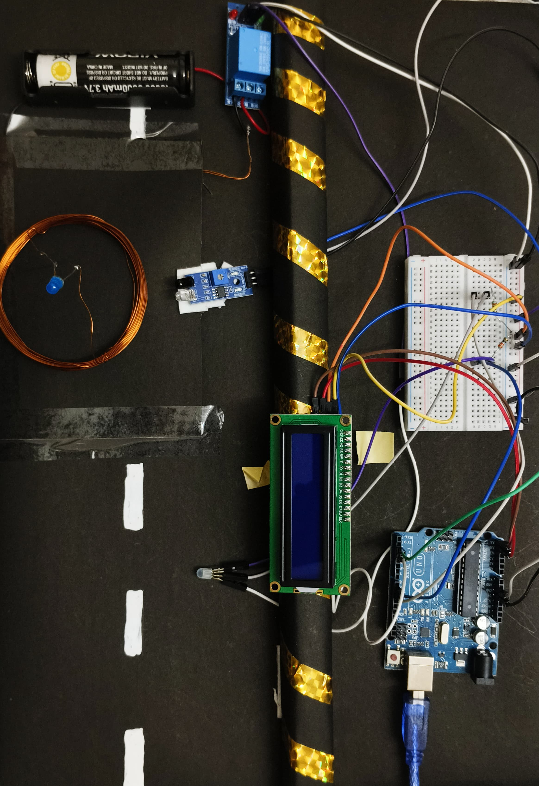

Technova // Project Analysis Document
The rapid adoption of Electric Vehicles (EVs) has increased the demand for efficient and user-friendly charging technologies. Conventional charging methods rely on physical connectors, which are susceptible to wear, maintenance issues, and safety concerns. This paper presents the design and implementation of an Arduino-based Wireless Charging System for Electric Vehicle applications. The proposed system utilizes inductive power transfer through transmitter and receiver coils to transfer electrical energy without direct electrical contact. An IR sensor is employed for vehicle detection, while an Arduino Uno controls system activation through a relay module. A 16×2 LCD display provides real-time charging status information. Experimental results demonstrate successful wireless power transfer and system monitoring, highlighting the feasibility of wireless charging technology for future EV infrastructure.
Keywords: Electric Vehicle, Wireless Power Transfer, Inductive Charging, Arduino Uno, Relay Module, LCD Display, EV Charging.
Electric Vehicles are becoming increasingly important in reducing greenhouse gas emissions and dependence on fossil fuels. However, charging infrastructure remains a significant challenge. Traditional plug-in charging systems require physical connectors that may experience mechanical wear and safety issues.
Wireless Power Transfer (WPT) technology offers a promising alternative by enabling energy transfer through electromagnetic fields. This research focuses on developing a prototype EV wireless charging system using Arduino technology, demonstrating the basic principles of inductive charging and intelligent control.
Wireless charging technology is based on electromagnetic induction principles first introduced by Nikola Tesla. Recent advancements in EV charging have focused on static and dynamic wireless charging systems. Inductive charging can improve user convenience, reduce mechanical wear, and support autonomous vehicle charging applications.
| Component | Function |
|---|---|
| Arduino Uno | Main controller |
| Transmitter Coil | Generates magnetic field |
| Receiver Coil | Receives transferred energy |
| IR Sensor | Vehicle detection |
| Relay Module | Controls charging activation |
| LCD Display | Displays charging status |
| Battery Pack | Stores transferred energy |
| Breadboard & Wires | Circuit connections |

The system operates on the principle of Electromagnetic Induction. When alternating current flows through the transmitter coil, a varying magnetic field is generated. This magnetic field induces voltage in the receiver coil placed nearby. The induced voltage is then utilized for charging the battery.
Sample System Output Readout:
This research successfully demonstrates an Arduino-based EV Wireless Charging System utilizing inductive power transfer technology. The developed prototype effectively detects vehicle presence, activates charging automatically, and displays charging status through an LCD interface. The system validates the feasibility of wireless charging for future EV infrastructure and provides a foundation for advanced wireless charging research.